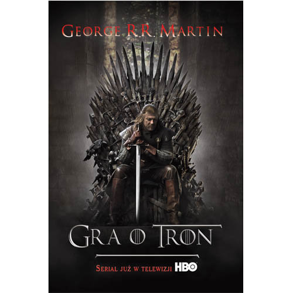

|  |
|
| Opis:
W Zachodnich Krainach o ośmiu tysiącach lat zapisanej historii widmo wojen i katastrofy nieustannie wisi nad ludźmi. Zbliża się zima, lodowate wichry wieją z północy, gdzie schroniły się wyparte przez ludzi pradawne rasy i starzy bogowie. Zbuntowani władcy na szczęście pokonali szalonego Smoczego Króla, Aerysa Targaryena, zasiadającego na Żelaznym Tronie Zachodnich Krain, lecz obalony władca pozostawił po sobie potomstwo, równie szalone jak on sam. Tron objął Robert – najznamienitszy z buntowników. Minęły już lata pokoju i oto możnowładcy zaczynają grę o tron. |
|